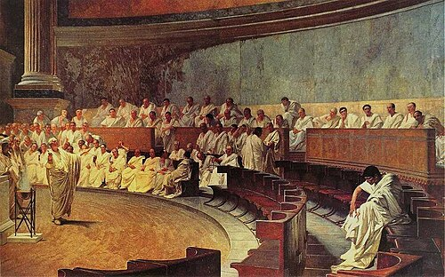

SENADORES

O senado (Senatus) é a instituição mais prestigiosa e duradoura de Roma. Ele existiu durante a Monarquia, a República com os cargos sendo
Questores
Questor (em latim: quaestor, procurador) tinha como função administrar as finanças públicas, ajudando na contabilidade e arrecadação de impostos
Pretores
Pretor (em latim: Praetor) possuia como função princiapal administrar a justiça(sendo o juiz principal de roma) e comandar exercitos quando precisa de mais generais, mas como função secundaria ele podia criar leis que durariam até o final de seu mandato.
Cônsul
Um cônsul(em latim: cōnsul) era o mais alto cargo político da República romana tendo como funções Presidiar as assembleias populares liderar aida mais exercitos que os pretores e vetar qualquer ação abusiva um do outro
A cada ano, dois cônsules eram eleitos simultaneamente para servirem em mandatos de um ano. Eles alternavam entre si mensalmente no exercício do imperium e o imperium consular estendia-se sobre Roma, Itália e províncias romanas.